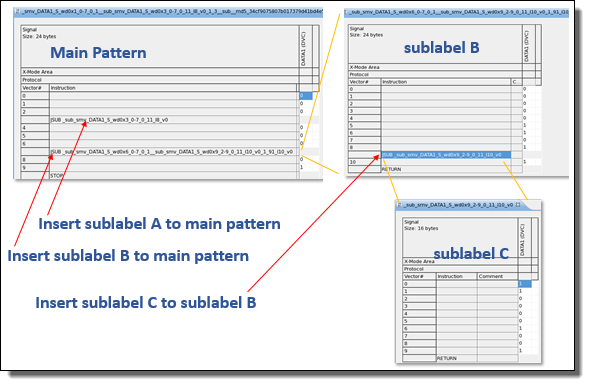

insertSub()
With this function, smartVec() supports inserting subroutines that
invoke the JSUB instruction. It enhances the variability of label
generation.
You can use insertSub() inside insertJmpe() and vice
versa. You can also insert JSUB and JMPE in the same
vector line of a label. For details see examples in insertJmpe().
insertSub() can be used with readData() and readBit(). Below are the rules of using readData() and
readBit() together with insertSub() in the same
execute().
readData()andreadBit()can be put within a sublabel generated byinsertSub().insertSub()cannot be inserted into areadData()orreadBit()area in the main pattern.
Syntax
insertSub(int vecLine); insertSub(int vecLine, int level);
Parameter |
Description |
|---|---|
vecLine |
Number of the vector line where you want to insert the subroutine. |
level |
Subroutine level. This refers to the target level at which you want to insert a new subroutine. The default value is 1, which means the first level subroutine and actually refers to the main pattern. To insert a subroutine into another subroutine, you should specify a level larger than 1. |
Return value
There is no return value.
Examples
Example 1
RDI_BEGIN();
rdi.smartVec("id2").pin("DATA1").writeData(0x1,8,0); // the content of the main pattern
.insertSub(3).pin("DATA1").writeData(0x3,8,0); // the content of sublabel A which is inserted in the main pattern
.insertSub(6).pin("DATA1").writeData(0x6,8,0); // the content of sublabel B, which is inserted in the main pattern
.insertSub(9,2).pin("DATA1").writeData(0x9,8,2).execute(); // the content of sublabel C which is inserted in sublabel B
RDI_END();In the example above, subroutines A and B are inserted into the main pattern at vector lines 3 and 6. subroutine C is inserted into a level 2 subroutine at vector line 9. Because the insertion is always made in the closest label when multiple subroutines exist at the target insertion level, subrountine C is inserted into subroutine B which is closer than A. The created pattern structure is as follows.

Example 2
Below is an example of using label(), for
example label("abc"), within
insertSub():
RDI_BEGIN();
...
rdi.smartVec().pin()...pin()... // the content in the main pattern
.insertSub(10).label("abc") // label "abc" is inserted in the main pattern with JSUB
.insertSub(5 ).label("abc").pin()...pin()... // sublabel A (copied and edited from "abc") is inserted in the main pattern with JSUB
...
RDI_END();In this example,
- If there are no
pin()...pin()...settings afterlabel(), the label "abc" will be directly called by JSUB. - If there are
pin()...pin()...settings afterlabel(), the label "abc" will be copied and edited, then called by JSUB. - If the label "abc" is not a subroutine, SmartRDI will clone it to a subroutine, then call it by JSUB and give a warning.
Example 3
Below is an example when insertSub() is put
in to label(), for example
label("abc"):
RDI_BEGIN();
rdi.smartVec().label("abc").pin()...pin()... // the content in the main pattern
.insertSub(5).pin()...pin()... // the content in sublabel A, which is inserted in the main pattern
RDI_END();In this example,
- If copyLabel() is set to true, the JSUB will be inserted into the copy of label "abc"; if copyLabel() is set to false, the JSUB will be inserted directly into label "abc".
- Following the general rule, omitting the copyLabel() command by default makes a copy of the label "abc" and inserts the modification. The copied label name will hold the content of the actions. It ensures the right content in the right pattern.
Example 4
insertSub() can be used inside a
burstLabel().begin()/burstLabel().end() block, as long as it
is not inserted into a user label. Below is an
example.
RDI_BEGIN();
rdi.smartVec().burstLabel("smv").begin();
rdi.smartVec().pin("DATA1").readData(2,0)
.insertSub(3).repeatSub(5).pin("DATA1").writeData(0x86,8,3).execute();
rdi.smartVec()
.insertSub(10).pin("DATA1").writeData(0x86,8,3).execute();
rdi.smartVec().burstLabel().end();
RDI_END();Functional changes
- Introduced in SmartRDI 2.4.4